Code
library(tidyverse)
library(readxl)
library(ggplot2)
library(dplyr)
library(tidyr)
library(janitor)
knitr::opts_chunk$set(echo = TRUE)Liam Tucksmith
May 2, 2023
Note: I slightly changed my final project to be looking at sports betting rather than media. The media portion was too ambitious so I pivoted to something more straightforward. Please let me know if that is an issue.
The most profitable sports league in the world, the National Football League, generated $18 billion in revenue in 2021 according to sportico.com. This total represents national media rights, league sponsorships with gambling companies, news outlets, and other companies, and shared revenue and royalties from the league’s various affiliates and subsidiaries, such as NFL Enterprises, NFL Properties, and NFL International. Sports betting, an industry linked to the NFL, generated $7.5 in revenue in 2021. As money is what keeps the NFL afloat and allows teams to competitively pay for top players and coaches, NFL teams benefit from sports betting engagement and vice versa. What I plan to analyze how the win-rate of a team relates to the ratio of correct money line predictions for that team, season by season. My hypothesis is that teams with higher win ratios will have higher correct money-line prediction ratios, both when they are favored, not favored, and in total.
The first dataset is a collection of all the matchups and scores that occurred in the NFL since 1966. The matchup information includes the names of the two teams competing, home/away team status, the match site, the weather on game day, and the final score for each team. Sports betting data for each game since 1977 is also included, and includes who was favored (money line), the point spread (point differential), and the over/under line. The dataset is from https://www.kaggle.com/datasets/tobycrabtree/nfl-scores-and-betting-data and was created from a variety of sources including games and scores from public websites such as ESPN, NFL.com, and Pro Football Reference. Weather information is from NOAA data, cross-referenced with NFLweather.com. Betting data reflects lines available at sportsline.com and aussportsbetting.com. For the analysis, I will limit the data to the data collected from the previous 5 years.
Data import and clean-up
[1] "schedule_date" "schedule_season" "schedule_week"
[4] "schedule_playoff" "team_home" "score_home"
[7] "score_away" "team_away" "team_favorite_id"
[10] "spread_favorite" "over_under_line" "stadium"
[13] "stadium_neutral" "weather_temperature" "weather_wind_mph"
[16] "weather_humidity" "weather_detail" schedule_date schedule_season schedule_week schedule_playoff
Length:1372 Min. :2018 Length:1372 Mode :logical
Class :character 1st Qu.:2019 Class :character FALSE:1311
Mode :character Median :2020 Mode :character TRUE :61
Mean :2020
3rd Qu.:2021
Max. :2022
team_home score_home score_away team_away
Length:1372 Min. : 0.00 Min. : 0.00 Length:1372
Class :character 1st Qu.:17.00 1st Qu.:16.00 Class :character
Mode :character Median :24.00 Median :23.00 Mode :character
Mean :23.82 Mean :22.52
3rd Qu.:30.25 3rd Qu.:30.00
Max. :56.00 Max. :59.00
team_favorite_id spread_favorite over_under_line stadium
Length:1372 Min. :-21.500 Min. :32.00 Length:1372
Class :character 1st Qu.: -7.000 1st Qu.:43.00 Class :character
Mode :character Median : -4.500 Median :46.00 Mode :character
Mean : -5.476 Mean :46.12
3rd Qu.: -3.000 3rd Qu.:49.00
Max. : -1.000 Max. :63.50
stadium_neutral weather_temperature weather_wind_mph weather_humidity
Mode :logical Min. : 7.0 Min. : 0.000 Min. : 8.00
FALSE:1350 1st Qu.:59.0 1st Qu.: 0.000 1st Qu.: 54.00
TRUE :22 Median :72.0 Median : 0.000 Median : 67.00
Mean :64.8 Mean : 3.219 Mean : 66.59
3rd Qu.:72.0 3rd Qu.: 6.000 3rd Qu.: 80.25
Max. :97.0 Max. :33.000 Max. :100.00
NA's :695 NA's :695 NA's :1292
weather_detail
Length:1372
Class :character
Mode :character
Rows: 1,372
Columns: 17
$ schedule_date <chr> "9/6/2018", "9/9/2018", "9/9/2018", "9/9/2018", "9…
$ schedule_season <int> 2018, 2018, 2018, 2018, 2018, 2018, 2018, 2018, 20…
$ schedule_week <chr> "1", "1", "1", "1", "1", "1", "1", "1", "1", "1", …
$ schedule_playoff <lgl> FALSE, FALSE, FALSE, FALSE, FALSE, FALSE, FALSE, F…
$ team_home <chr> "Philadelphia Eagles", "Arizona Cardinals", "Balti…
$ score_home <int> 18, 6, 47, 16, 21, 27, 24, 23, 28, 27, 24, 27, 40,…
$ score_away <int> 12, 24, 3, 8, 21, 24, 23, 34, 38, 20, 16, 20, 48, …
$ team_away <chr> "Atlanta Falcons", "Washington Redskins", "Buffalo…
$ team_favorite_id <chr> "PHI", "ARI", "BAL", "CAR", "PIT", "DEN", "GB", "C…
$ spread_favorite <dbl> -1.0, -2.0, -7.5, -2.5, -3.5, -3.0, -6.5, -1.0, -3…
$ over_under_line <dbl> 44.5, 43.5, 39.0, 42.5, 41.0, 42.5, 45.0, 47.5, 48…
$ stadium <chr> "Lincoln Financial Field", "University of Phoenix …
$ stadium_neutral <lgl> FALSE, FALSE, FALSE, FALSE, FALSE, FALSE, FALSE, F…
$ weather_temperature <int> 81, 72, 61, 81, 58, 84, 62, 72, 84, 89, 72, 62, 72…
$ weather_wind_mph <int> 8, 0, 12, 9, 11, 5, 10, 0, 8, 7, 0, 10, 0, 7, 0, 1…
$ weather_humidity <int> NA, NA, NA, NA, NA, NA, NA, NA, NA, NA, NA, NA, NA…
$ weather_detail <chr> "rain", "indoor", "rain", "rain", "rain", "", "", …Data cleanup and descriptive analytics
[1] "Philadelphia Eagles" "Arizona Cardinals"
[3] "Baltimore Ravens" "Carolina Panthers"
[5] "Cleveland Browns" "Denver Broncos"
[7] "Green Bay Packers" "Indianapolis Colts"
[9] "Los Angeles Chargers" "Miami Dolphins"
[11] "Minnesota Vikings" "New England Patriots"
[13] "New Orleans Saints" "New York Giants"
[15] "Detroit Lions" "Oakland Raiders"
[17] "Cincinnati Bengals" "Atlanta Falcons"
[19] "Buffalo Bills" "Dallas Cowboys"
[21] "Jacksonville Jaguars" "Los Angeles Rams"
[23] "New York Jets" "Pittsburgh Steelers"
[25] "San Francisco 49ers" "Tampa Bay Buccaneers"
[27] "Tennessee Titans" "Washington Redskins"
[29] "Chicago Bears" "Houston Texans"
[31] "Kansas City Chiefs" "Seattle Seahawks"
[33] "Washington Football Team" "Las Vegas Raiders"
[35] "Washington Commanders" [1] "PHI" "ARI" "BAL" "CAR" "PIT" "DEN" "GB" "CIN" "LAC" "TEN" "MIN" "NE"
[13] "NO" "JAX" "DET" "LAR" "ATL" "DAL" "NYJ" "SF" "HOU" "WAS" "CHI" "CLE"
[25] "KC" "MIA" "SEA" "IND" "LVR" "TB" "NYG" "BUF"#rewrite team_home and team_away to use IDs
scores$team_home[scores$team_home=="Philadelphia Eagles"] <- "PHI"
scores$team_home[scores$team_home=="Arizona Cardinals"] <- "ARI"
scores$team_home[scores$team_home=="Baltimore Ravens"] <- "BAL"
scores$team_home[scores$team_home=="Carolina Panthers"] <- "CAR"
scores$team_home[scores$team_home=="Cleveland Browns"] <- "CLE"
scores$team_home[scores$team_home=="Denver Broncos"] <- "DEN"
scores$team_home[scores$team_home=="Green Bay Packers"] <- "GB"
scores$team_home[scores$team_home=="Indianapolis Colts"] <- "IND"
scores$team_home[scores$team_home=="Los Angeles Chargers"] <- "LAC"
scores$team_home[scores$team_home=="Miami Dolphins"] <- "MIA"
scores$team_home[scores$team_home=="Minnesota Vikings"] <- "MIN"
scores$team_home[scores$team_home=="New England Patriots"] <- "NE"
scores$team_home[scores$team_home=="New Orleans Saints"] <- "NO"
scores$team_home[scores$team_home=="New York Giants"] <- "NYG"
scores$team_home[scores$team_home=="Detroit Lions"] <- "DET"
scores$team_home[scores$team_home=="Oakland Raiders" |
scores$team_home=="Las Vegas Raiders"] <- "LVR"
scores$team_home[scores$team_home=="Cincinnati Bengals"] <- "CIN"
scores$team_home[scores$team_home=="Atlanta Falcons"] <- "ATL"
scores$team_home[scores$team_home=="Buffalo Bills"] <- "BUF"
scores$team_home[scores$team_home=="Dallas Cowboys"] <- "DAL"
scores$team_home[scores$team_home=="Jacksonville Jaguars"] <- "JAX"
scores$team_home[scores$team_home=="Los Angeles Rams"] <- "LAR"
scores$team_home[scores$team_home=="New York Jets"] <- "NYJ"
scores$team_home[scores$team_home=="Pittsburgh Steelers"] <- "PIT"
scores$team_home[scores$team_home=="San Francisco 49ers"] <- "SF"
scores$team_home[scores$team_home=="Tampa Bay Buccaneers"] <- "TB"
scores$team_home[scores$team_home=="Tennessee Titans"] <- "TEN"
scores$team_home[scores$team_home=="Washington Redskins" |
scores$team_home=="Washington Football Team"|
scores$team_home=="Washington Commanders"] <- "WAS"
scores$team_home[scores$team_home=="Chicago Bears"] <- "CHI"
scores$team_home[scores$team_home=="Houston Texans"] <- "HOU"
scores$team_home[scores$team_home=="Kansas City Chiefs"] <- "KC"
scores$team_home[scores$team_home=="Seattle Seahawks"] <- "SEA"
scores$team_away[scores$team_away=="Philadelphia Eagles"] <- "PHI"
scores$team_away[scores$team_away=="Arizona Cardinals"] <- "ARI"
scores$team_away[scores$team_away=="Baltimore Ravens"] <- "BAL"
scores$team_away[scores$team_away=="Carolina Panthers"] <- "CAR"
scores$team_away[scores$team_away=="Cleveland Browns"] <- "CLE"
scores$team_away[scores$team_away=="Denver Broncos"] <- "DEN"
scores$team_away[scores$team_away=="Green Bay Packers"] <- "GB"
scores$team_away[scores$team_away=="Indianapolis Colts"] <- "IND"
scores$team_away[scores$team_away=="Los Angeles Chargers"] <- "LAC"
scores$team_away[scores$team_away=="Miami Dolphins"] <- "MIA"
scores$team_away[scores$team_away=="Minnesota Vikings"] <- "MIN"
scores$team_away[scores$team_away=="New England Patriots"] <- "NE"
scores$team_away[scores$team_away=="New Orleans Saints"] <- "NO"
scores$team_away[scores$team_away=="New York Giants"] <- "NYG"
scores$team_away[scores$team_away=="Detroit Lions"] <- "DET"
scores$team_away[scores$team_away=="Oakland Raiders" |
scores$team_away=="Las Vegas Raiders"] <- "LVR"
scores$team_away[scores$team_away=="Cincinnati Bengals"] <- "CIN"
scores$team_away[scores$team_away=="Atlanta Falcons"] <- "ATL"
scores$team_away[scores$team_away=="Buffalo Bills"] <- "BUF"
scores$team_away[scores$team_away=="Dallas Cowboys"] <- "DAL"
scores$team_away[scores$team_away=="Jacksonville Jaguars"] <- "JAX"
scores$team_away[scores$team_away=="Los Angeles Rams"] <- "LAR"
scores$team_away[scores$team_away=="New York Jets"] <- "NYJ"
scores$team_away[scores$team_away=="Pittsburgh Steelers"] <- "PIT"
scores$team_away[scores$team_away=="San Francisco 49ers"] <- "SF"
scores$team_away[scores$team_away=="Tampa Bay Buccaneers"] <- "TB"
scores$team_away[scores$team_away=="Tennessee Titans"] <- "TEN"
scores$team_away[scores$team_away=="Washington Redskins" |
scores$team_away=="Washington Football Team"|
scores$team_away=="Washington Commanders"] <- "WAS"
scores$team_away[scores$team_away=="Chicago Bears"] <- "CHI"
scores$team_away[scores$team_away=="Houston Texans"] <- "HOU"
scores$team_away[scores$team_away=="Kansas City Chiefs"] <- "KC"
scores$team_away[scores$team_away=="Seattle Seahawks"] <- "SEA"
unique(scores$team_home) [1] "PHI" "ARI" "BAL" "CAR" "CLE" "DEN" "GB" "IND" "LAC" "MIA" "MIN" "NE"
[13] "NO" "NYG" "DET" "LVR" "CIN" "ATL" "BUF" "DAL" "JAX" "LAR" "NYJ" "PIT"
[25] "SF" "TB" "TEN" "WAS" "CHI" "HOU" "KC" "SEA"[1] 32 [1] "ATL" "WAS" "BUF" "DAL" "PIT" "SEA" "CHI" "CIN" "KC" "TEN" "SF" "HOU"
[13] "TB" "JAX" "NYJ" "LAR" "BAL" "CAR" "LAC" "NYG" "LVR" "MIN" "NE" "ARI"
[25] "CLE" "MIA" "DET" "PHI" "IND" "NO" "DEN" "GB" #add column for game winner
scores$score_home = as.integer(scores$score_home)
scores$score_away = as.integer(scores$score_away)
scores$winner = ifelse(scores$score_home == scores$score_away, "TIE", ifelse(scores$score_home > scores$score_away, scores$team_home, scores$team_away))
#add column for if money line prediction is true
scores$mlTF = ifelse(scores$winner == scores$team_favorite_id, TRUE, FALSE)
scores$mlHomeAway = ifelse(scores$team_home == scores$team_favorite_id, "Home", "Away")
#get counts for wins and losses, correct and incorrect moneyline predictions when favored and not favored, for away and home games
home_team <- scores %>% group_by(team_home, schedule_season) %>%
summarise(home_wins = sum(team_home == winner),
home_losses = sum(team_away == winner),
ml_incorr_favored_h = sum(mlTF == FALSE & mlHomeAway == "Home"),
ml_incorr_unfavored_h = sum(mlTF == FALSE & mlHomeAway == "Away"),
ml_corr_favored_h = sum(mlTF == TRUE & mlHomeAway == "Home"),
ml_corr_unfavored_h = sum(mlTF == TRUE & mlHomeAway == "Away"),
.groups = 'drop')
away_team <- scores %>% group_by(team_away, schedule_season) %>%
summarise(away_wins = sum(team_away == winner),
away_losses = sum(team_home == winner),
ml_incorr_favored_a = sum(mlTF == FALSE & mlHomeAway == "Away"),
ml_incorr_unfavored_a = sum(mlTF == FALSE & mlHomeAway == "Home"),
ml_corr_favored_a = sum(mlTF == TRUE & mlHomeAway == "Away"),
ml_corr_unfavored_a = sum(mlTF == TRUE & mlHomeAway == "Home"),
.groups = 'drop')
#merge home and away data
teams <- merge(home_team, away_team,
by.x = c("team_home","schedule_season"),
by.y = c("team_away","schedule_season"))
colnames(teams) [1] "team_home" "schedule_season" "home_wins"
[4] "home_losses" "ml_incorr_favored_h" "ml_incorr_unfavored_h"
[7] "ml_corr_favored_h" "ml_corr_unfavored_h" "away_wins"
[10] "away_losses" "ml_incorr_favored_a" "ml_incorr_unfavored_a"
[13] "ml_corr_favored_a" "ml_corr_unfavored_a" teams <- teams %>%
rename("team" = "team_home")
#combine home and away fields
teams$total_wins <- teams$home_wins + teams$away_wins
teams$total_losses <- teams$home_losses + teams$away_losses
teams$total_home_games <- teams$home_wins + teams$home_losses
#combine favored and unfavored, correct and incorrect data
teams$ml_corr_favored <- teams$ml_corr_favored_h + teams$ml_corr_favored_a
teams$ml_corr_unfavored <- teams$ml_corr_unfavored_h + teams$ml_corr_unfavored_a
teams$ml_corr_total <- teams$ml_corr_favored + teams$ml_corr_unfavored
teams$ml_incorr_favored <- teams$ml_incorr_favored_h + teams$ml_incorr_favored_a
teams$ml_incorr_unfavored <- teams$ml_incorr_unfavored_h + teams$ml_incorr_unfavored_a
teams$ml_incorr_total <- teams$ml_incorr_favored + teams$ml_incorr_unfavored
#calculate win, correct, uncorrect, and total money line predictions
teams$win_ratio = teams$total_wins/(teams$total_wins + teams$total_losses)
teams$ratio_corr_favored = teams$ml_corr_favored/(teams$ml_corr_favored + teams$ml_incorr_favored)
teams$ratio_corr_unfavored = teams$ml_corr_unfavored/(teams$ml_corr_unfavored + teams$ml_incorr_unfavored)
teams$ratio_corr_total = teams$ml_corr_total/(teams$ml_corr_total + teams$ml_incorr_total) team schedule_season home_wins home_losses ml_incorr_favored_h
1 ARI 2018 1 7 2
2 ARI 2019 2 5 1
3 ARI 2020 4 4 3
4 ARI 2021 3 5 5
5 ARI 2022 1 8 1
6 ATL 2018 4 4 4
7 ATL 2019 3 5 2
8 ATL 2020 2 6 3
9 ATL 2021 2 6 2
10 ATL 2022 6 3 0
11 BAL 2018 6 3 3
12 BAL 2019 7 2 2
13 BAL 2020 5 3 3
14 BAL 2021 5 4 2
15 BAL 2022 5 3 2
16 BUF 2018 4 4 1
17 BUF 2019 4 4 1
18 BUF 2020 9 1 0
19 BUF 2021 7 3 3
20 BUF 2022 8 2 2
21 CAR 2018 5 3 1
22 CAR 2019 2 6 3
23 CAR 2020 2 6 3
24 CAR 2021 2 6 3
25 CAR 2022 5 4 3
26 CHI 2018 7 2 1
27 CHI 2019 4 4 3
28 CHI 2020 3 5 1
29 CHI 2021 3 5 0
30 CHI 2022 2 7 1
31 CIN 2018 4 4 1
32 CIN 2019 2 6 2
33 CIN 2020 3 5 0
34 CIN 2021 6 5 2
35 CIN 2022 7 1 1
36 CLE 2018 5 2 1
37 CLE 2019 4 4 2
38 CLE 2020 6 2 1
39 CLE 2021 6 3 2
40 CLE 2022 4 4 3
41 DAL 2018 8 1 1
42 DAL 2019 5 3 3
43 DAL 2020 4 4 2
44 DAL 2021 5 4 4
45 DAL 2022 8 1 0
46 DEN 2018 3 5 2
47 DEN 2019 5 3 1
48 DEN 2020 2 6 0
49 DEN 2021 4 5 4
50 DEN 2022 4 4 2
ml_incorr_unfavored_h ml_corr_favored_h ml_corr_unfavored_h away_wins
1 0 1 5 2
2 3 0 4 3
3 1 3 1 4
4 0 3 0 8
5 0 1 7 3
6 0 4 0 3
7 1 2 3 4
8 1 1 3 2
9 0 2 4 5
10 2 4 3 1
11 0 6 0 4
12 2 5 0 7
13 0 5 0 7
14 1 4 2 3
15 0 5 1 5
16 2 2 3 2
17 0 4 3 6
18 2 7 1 6
19 0 7 0 5
20 0 8 0 6
21 1 4 2 2
22 0 2 3 3
23 2 0 3 3
24 1 1 3 3
25 5 0 1 2
26 1 6 1 5
27 1 3 1 4
28 2 1 4 5
29 0 3 5 3
30 1 1 6 1
31 0 4 3 2
32 2 0 4 0
33 2 1 5 1
34 2 4 3 7
35 1 6 0 7
36 4 2 1 2
37 0 4 2 2
38 0 6 1 6
39 0 6 1 2
40 2 2 1 3
41 2 6 0 3
42 1 4 0 3
43 2 2 2 2
44 0 5 0 7
45 1 7 1 5
46 1 2 3 3
47 2 3 2 2
48 2 0 6 3
49 1 3 1 3
50 1 3 2 1
away_losses ml_incorr_favored_a ml_incorr_unfavored_a ml_corr_favored_a
1 6 0 2 0
2 5 0 3 0
3 4 2 1 3
4 2 1 6 2
5 5 1 3 0
6 5 1 1 2
7 4 1 4 0
8 6 0 2 0
9 4 0 3 2
10 7 1 1 0
11 4 2 3 1
12 1 0 1 6
13 3 1 0 7
14 5 3 1 2
15 5 2 2 3
16 6 0 2 0
17 3 0 4 2
18 3 1 1 5
19 4 2 2 3
20 2 2 0 6
21 6 4 2 0
22 5 0 2 1
23 5 0 2 1
24 6 2 2 1
25 6 1 2 0
26 3 2 1 4
27 4 1 0 4
28 4 0 4 1
29 6 0 2 1
30 7 0 1 0
31 6 0 1 1
32 8 1 0 0
33 6 0 2 0
34 3 1 5 2
35 4 2 1 6
36 6 0 1 1
37 6 4 1 1
38 4 1 3 3
39 6 0 1 1
40 6 1 2 1
41 6 1 3 0
42 5 4 0 3
43 6 2 1 1
44 2 0 2 5
45 5 3 2 3
46 5 2 1 2
47 6 1 2 0
48 5 0 3 0
49 5 2 1 2
50 8 3 1 0
ml_corr_unfavored_a total_wins total_losses total_home_games ml_corr_favored
1 6 3 13 8 1
2 5 5 10 7 0
3 2 8 8 8 6
4 1 11 7 8 5
5 4 4 13 9 1
6 4 7 9 8 6
7 3 7 9 8 2
8 6 4 12 8 1
9 4 7 10 8 4
10 6 7 10 9 4
11 2 10 7 9 7
12 1 14 3 9 11
13 2 12 6 8 12
14 2 8 9 9 6
15 3 10 8 8 8
16 6 6 10 8 2
17 3 10 7 8 6
18 2 15 4 10 12
19 2 12 7 10 10
20 0 14 4 10 14
21 2 7 9 8 4
22 5 5 11 8 3
23 5 5 11 8 1
24 4 5 12 8 2
25 5 7 10 9 0
26 1 12 5 9 10
27 3 8 8 8 7
28 4 8 9 8 2
29 6 6 11 8 4
30 7 3 14 9 1
31 6 6 10 8 5
32 7 2 14 8 0
33 6 4 11 8 1
34 2 13 8 11 6
35 2 14 5 8 12
36 6 7 8 7 3
37 2 6 10 8 5
38 3 12 6 8 9
39 6 8 9 9 7
40 5 7 10 8 3
41 5 11 7 9 6
42 1 8 8 8 7
43 4 6 10 8 3
44 2 12 6 9 10
45 2 13 6 9 10
46 3 6 10 8 4
47 5 7 9 8 3
48 5 5 11 8 0
49 3 7 10 9 5
50 5 5 12 8 3
ml_corr_unfavored ml_corr_total ml_incorr_favored ml_incorr_unfavored
1 11 12 2 2
2 9 9 1 6
3 3 9 5 2
4 1 6 6 6
5 11 12 2 3
6 4 10 5 1
7 6 8 3 5
8 9 10 3 3
9 8 12 2 3
10 9 13 1 3
11 2 9 5 3
12 1 12 2 3
13 2 14 4 0
14 4 10 5 2
15 4 12 4 2
16 9 11 1 4
17 6 12 1 4
18 3 15 1 3
19 2 12 5 2
20 0 14 4 0
21 4 8 5 3
22 8 11 3 2
23 8 9 3 4
24 7 9 5 3
25 6 6 4 7
26 2 12 3 2
27 4 11 4 1
28 8 10 1 6
29 11 15 0 2
30 13 14 1 2
31 9 14 1 1
32 11 11 3 2
33 11 12 0 4
34 5 11 3 7
35 2 14 3 2
36 7 10 1 5
37 4 9 6 1
38 4 13 2 3
39 7 14 2 1
40 6 9 4 4
41 5 11 2 5
42 1 8 7 1
43 6 9 4 3
44 2 12 4 2
45 3 13 3 3
46 6 10 4 2
47 7 10 2 4
48 11 11 0 5
49 4 9 6 2
50 7 10 5 2
ml_incorr_total win_ratio ratio_corr_favored ratio_corr_unfavored
1 4 0.1875000 0.3333333 0.8461538
2 7 0.3333333 0.0000000 0.6000000
3 7 0.5000000 0.5454545 0.6000000
4 12 0.6111111 0.4545455 0.1428571
5 5 0.2352941 0.3333333 0.7857143
6 6 0.4375000 0.5454545 0.8000000
7 8 0.4375000 0.4000000 0.5454545
8 6 0.2500000 0.2500000 0.7500000
9 5 0.4117647 0.6666667 0.7272727
10 4 0.4117647 0.8000000 0.7500000
11 8 0.5882353 0.5833333 0.4000000
12 5 0.8235294 0.8461538 0.2500000
13 4 0.6666667 0.7500000 1.0000000
14 7 0.4705882 0.5454545 0.6666667
15 6 0.5555556 0.6666667 0.6666667
16 5 0.3750000 0.6666667 0.6923077
17 5 0.5882353 0.8571429 0.6000000
18 4 0.7894737 0.9230769 0.5000000
19 7 0.6315789 0.6666667 0.5000000
20 4 0.7777778 0.7777778 NaN
21 8 0.4375000 0.4444444 0.5714286
22 5 0.3125000 0.5000000 0.8000000
23 7 0.3125000 0.2500000 0.6666667
24 8 0.2941176 0.2857143 0.7000000
25 11 0.4117647 0.0000000 0.4615385
26 5 0.7058824 0.7692308 0.5000000
27 5 0.5000000 0.6363636 0.8000000
28 7 0.4705882 0.6666667 0.5714286
29 2 0.3529412 1.0000000 0.8461538
30 3 0.1764706 0.5000000 0.8666667
31 2 0.3750000 0.8333333 0.9000000
32 5 0.1250000 0.0000000 0.8461538
33 4 0.2666667 1.0000000 0.7333333
34 10 0.6190476 0.6666667 0.4166667
35 5 0.7368421 0.8000000 0.5000000
36 6 0.4666667 0.7500000 0.5833333
37 7 0.3750000 0.4545455 0.8000000
38 5 0.6666667 0.8181818 0.5714286
39 3 0.4705882 0.7777778 0.8750000
40 8 0.4117647 0.4285714 0.6000000
41 7 0.6111111 0.7500000 0.5000000
42 8 0.5000000 0.5000000 0.5000000
43 7 0.3750000 0.4285714 0.6666667
44 6 0.6666667 0.7142857 0.5000000
45 6 0.6842105 0.7692308 0.5000000
46 6 0.3750000 0.5000000 0.7500000
47 6 0.4375000 0.6000000 0.6363636
48 5 0.3125000 NaN 0.6875000
49 8 0.4117647 0.4545455 0.6666667
50 7 0.2941176 0.3750000 0.7777778
ratio_corr_total
1 0.7500000
2 0.5625000
3 0.5625000
4 0.3333333
5 0.7058824
6 0.6250000
7 0.5000000
8 0.6250000
9 0.7058824
10 0.7647059
11 0.5294118
12 0.7058824
13 0.7777778
14 0.5882353
15 0.6666667
16 0.6875000
17 0.7058824
18 0.7894737
19 0.6315789
20 0.7777778
21 0.5000000
22 0.6875000
23 0.5625000
24 0.5294118
25 0.3529412
26 0.7058824
27 0.6875000
28 0.5882353
29 0.8823529
30 0.8235294
31 0.8750000
32 0.6875000
33 0.7500000
34 0.5238095
35 0.7368421
36 0.6250000
37 0.5625000
38 0.7222222
39 0.8235294
40 0.5294118
41 0.6111111
42 0.5000000
43 0.5625000
44 0.6666667
45 0.6842105
46 0.6250000
47 0.6250000
48 0.6875000
49 0.5294118
50 0.5882353#plot correct and incorrect moneyline prediction ratio for each team by season
agg_tbl <- teams %>% group_by(team, schedule_season) %>%
summarise(corr_ratio = (sum(ml_corr_total)/(sum(ml_corr_total + ml_incorr_total))),
incorr_ratio = (sum(ml_incorr_total)/(sum(ml_corr_total + ml_incorr_total))),
sum = sum(ml_corr_total + ml_incorr_total),
.groups = 'drop')
ggplot(agg_tbl, aes(factor(team), fill=factor(corr_ratio))) +
geom_bar()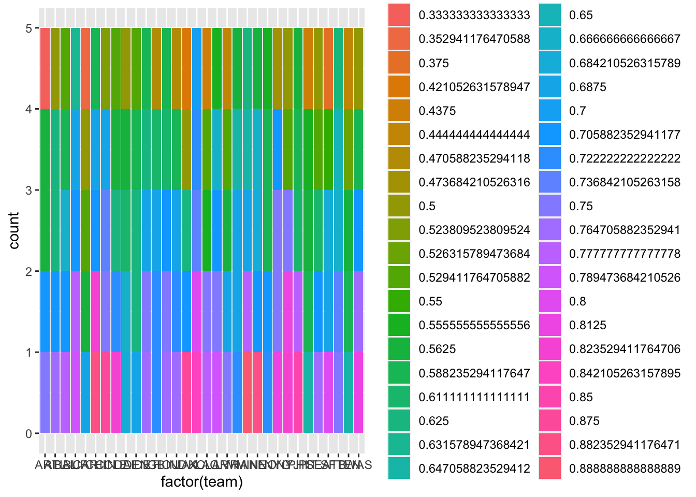
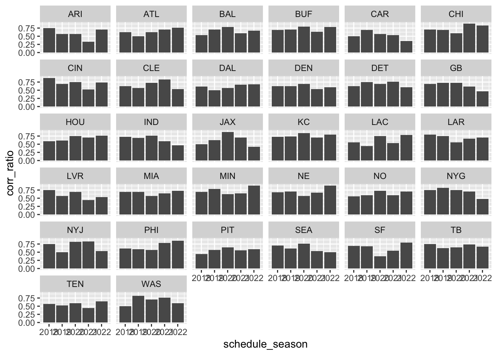
#plot correct moneyline prediction ratio for each team by season, facet by team
agg_tbl2 <- teams %>% group_by(team, schedule_season) %>%
summarise(ratio = (sum(ml_corr_favored)/(sum(ml_corr_favored + ml_incorr_favored))),
.groups = 'drop')
ggplot(agg_tbl2, aes(x=schedule_season, y=ratio)) +
geom_col() +
facet_wrap(~team)Warning: Removed 4 rows containing missing values (`position_stack()`).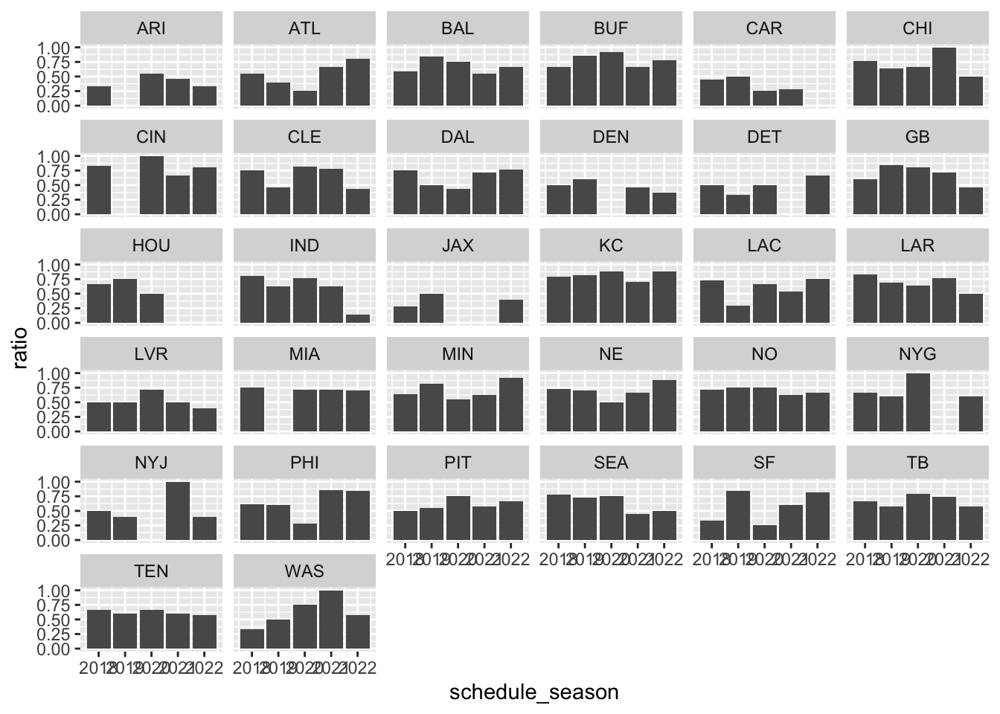
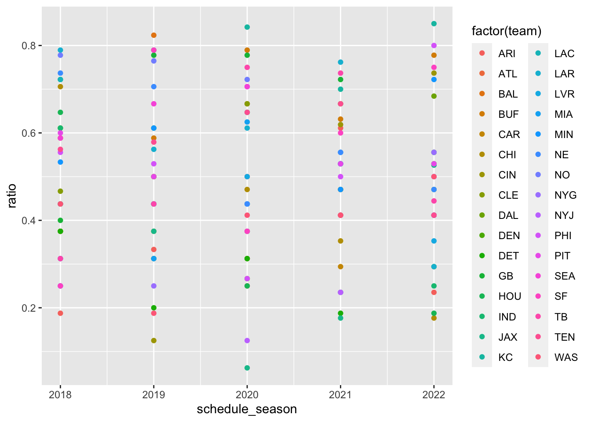
Call:
lm(formula = teams$ratio_corr_favored ~ teams$win_ratio)
Residuals:
Min 1Q Median 3Q Max
-0.52819 -0.06854 -0.01043 0.07007 0.61637
Coefficients:
Estimate Std. Error t value Pr(>|t|)
(Intercept) 0.19088 0.04002 4.77 4.24e-06 ***
teams$win_ratio 0.81917 0.07578 10.81 < 2e-16 ***
---
Signif. codes: 0 '***' 0.001 '**' 0.01 '*' 0.05 '.' 0.1 ' ' 1
Residual standard error: 0.1685 on 154 degrees of freedom
(4 observations deleted due to missingness)
Multiple R-squared: 0.4314, Adjusted R-squared: 0.4277
F-statistic: 116.9 on 1 and 154 DF, p-value: < 2.2e-16
Call:
lm(formula = teams$ratio_corr_unfavored ~ teams$win_ratio)
Residuals:
Min 1Q Median 3Q Max
-0.44543 -0.07571 -0.01488 0.05314 0.59908
Coefficients:
Estimate Std. Error t value Pr(>|t|)
(Intercept) 0.96472 0.03471 27.79 <2e-16 ***
teams$win_ratio -0.70474 0.06720 -10.49 <2e-16 ***
---
Signif. codes: 0 '***' 0.001 '**' 0.01 '*' 0.05 '.' 0.1 ' ' 1
Residual standard error: 0.1496 on 154 degrees of freedom
(4 observations deleted due to missingness)
Multiple R-squared: 0.4167, Adjusted R-squared: 0.4129
F-statistic: 110 on 1 and 154 DF, p-value: < 2.2e-16
Call:
lm(formula = teams$ratio_corr_total ~ teams$win_ratio)
Residuals:
Min 1Q Median 3Q Max
-0.31798 -0.09001 0.01632 0.08683 0.23861
Coefficients:
Estimate Std. Error t value Pr(>|t|)
(Intercept) 0.657053 0.026274 25.008 <2e-16 ***
teams$win_ratio -0.009385 0.050237 -0.187 0.852
---
Signif. codes: 0 '***' 0.001 '**' 0.01 '*' 0.05 '.' 0.1 ' ' 1
Residual standard error: 0.1145 on 158 degrees of freedom
Multiple R-squared: 0.0002208, Adjusted R-squared: -0.006107
F-statistic: 0.0349 on 1 and 158 DF, p-value: 0.8521
Call:
lm(formula = teams$ratio_corr_favored ~ teams$win_ratio + teams$team)
Residuals:
Min 1Q Median 3Q Max
-0.48798 -0.07169 -0.00507 0.08247 0.58378
Coefficients:
Estimate Std. Error t value Pr(>|t|)
(Intercept) 0.04455 0.08219 0.542 0.58875
teams$win_ratio 0.77329 0.09733 7.945 1.05e-12 ***
teams$teamATL 0.18652 0.10426 1.789 0.07607 .
teams$teamBAL 0.15363 0.10699 1.436 0.15358
teams$teamBUF 0.24468 0.10725 2.281 0.02424 *
teams$teamCAR -0.02201 0.10426 -0.211 0.83314
teams$teamCHI 0.32875 0.10445 3.147 0.00207 **
teams$teamCIN 0.28718 0.10436 2.752 0.00683 **
teams$teamCLE 0.23153 0.10474 2.210 0.02892 *
teams$teamDAL 0.14911 0.10594 1.407 0.16182
teams$teamDEN 0.14430 0.11057 1.305 0.19432
teams$teamDET 0.18153 0.11058 1.642 0.10324
teams$teamGB 0.15153 0.10719 1.414 0.15998
teams$teamHOU 0.09757 0.11074 0.881 0.38000
teams$teamIND 0.16508 0.10491 1.573 0.11819
teams$teamJAX -0.03209 0.10456 -0.307 0.75941
teams$teamKC 0.16428 0.11153 1.473 0.14331
teams$teamLAC 0.15644 0.10511 1.488 0.13921
teams$teamLAR 0.17190 0.10663 1.612 0.10949
teams$teamLVR 0.15414 0.10434 1.477 0.14214
teams$teamMIA 0.27068 0.11152 2.427 0.01667 *
teams$teamMIN 0.23795 0.10573 2.250 0.02619 *
teams$teamNE 0.19991 0.10619 1.883 0.06212 .
teams$teamNO 0.16083 0.10745 1.497 0.13703
teams$teamNYG 0.26148 0.10428 2.507 0.01346 *
teams$teamNYJ 0.18972 0.10455 1.815 0.07201 .
teams$teamPHI 0.18542 0.10536 1.760 0.08090 .
teams$teamPIT 0.12113 0.10604 1.142 0.25553
teams$teamSEA 0.15109 0.10607 1.424 0.15685
teams$teamSF 0.09851 0.10570 0.932 0.35319
teams$teamTB 0.20718 0.10544 1.965 0.05168 .
teams$teamTEN 0.13301 0.10605 1.254 0.21213
teams$teamWAS 0.28505 0.10426 2.734 0.00718 **
---
Signif. codes: 0 '***' 0.001 '**' 0.01 '*' 0.05 '.' 0.1 ' ' 1
Residual standard error: 0.1648 on 123 degrees of freedom
(4 observations deleted due to missingness)
Multiple R-squared: 0.5654, Adjusted R-squared: 0.4523
F-statistic: 5 on 32 and 123 DF, p-value: 4.13e-11
Call:
lm(formula = teams$ratio_corr_unfavored ~ teams$win_ratio + teams$team)
Residuals:
Min 1Q Median 3Q Max
-0.39959 -0.08608 -0.00109 0.05211 0.47492
Coefficients:
Estimate Std. Error t value Pr(>|t|)
(Intercept) 0.88605 0.07398 11.976 < 2e-16 ***
teams$win_ratio -0.77952 0.08754 -8.905 5.81e-15 ***
teams$teamATL 0.13227 0.09387 1.409 0.16133
teams$teamBAL 0.19463 0.09633 2.020 0.04551 *
teams$teamBUF 0.15167 0.10144 1.495 0.13744
teams$teamCAR 0.02957 0.09388 0.315 0.75331
teams$teamCHI 0.17470 0.09405 1.858 0.06562 .
teams$teamCIN 0.12409 0.09397 1.321 0.18910
teams$teamCLE 0.17261 0.09431 1.830 0.06962 .
teams$teamDAL 0.08958 0.09538 0.939 0.34952
teams$teamDEN 0.10305 0.09386 1.098 0.27441
teams$teamDET 0.07868 0.09397 0.837 0.40410
teams$teamGB 0.06812 0.09650 0.706 0.48159
teams$teamHOU 0.07793 0.09387 0.830 0.40802
teams$teamIND 0.17593 0.09446 1.862 0.06493 .
teams$teamJAX 0.03949 0.09414 0.419 0.67562
teams$teamKC 0.15497 0.10636 1.457 0.14765
teams$teamLAC 0.14119 0.09464 1.492 0.13827
teams$teamLAR 0.18399 0.09600 1.916 0.05763 .
teams$teamLVR 0.07405 0.09395 0.788 0.43207
teams$teamMIA 0.11852 0.09433 1.256 0.21133
teams$teamMIN 0.28559 0.09520 3.000 0.00327 **
teams$teamNE 0.08791 0.10075 0.873 0.38458
teams$teamNO 0.01032 0.09674 0.107 0.91522
teams$teamNYG 0.09764 0.09389 1.040 0.30043
teams$teamNYJ 0.06975 0.09413 0.741 0.46009
teams$teamPHI 0.26264 0.09486 2.769 0.00650 **
teams$teamPIT 0.02303 0.09547 0.241 0.80977
teams$teamSEA 0.19750 0.09550 2.068 0.04072 *
teams$teamSF 0.07878 0.09517 0.828 0.40936
teams$teamTB 0.18519 0.10004 1.851 0.06656 .
teams$teamTEN 0.01980 0.09548 0.207 0.83605
teams$teamWAS 0.09817 0.09387 1.046 0.29772
---
Signif. codes: 0 '***' 0.001 '**' 0.01 '*' 0.05 '.' 0.1 ' ' 1
Residual standard error: 0.1484 on 123 degrees of freedom
(4 observations deleted due to missingness)
Multiple R-squared: 0.5417, Adjusted R-squared: 0.4225
F-statistic: 4.543 on 32 and 123 DF, p-value: 5.815e-10
Call:
lm(formula = teams$ratio_corr_total ~ teams$win_ratio + teams$team)
Residuals:
Min 1Q Median 3Q Max
-0.258170 -0.066978 -0.001225 0.071344 0.231886
Coefficients:
Estimate Std. Error t value Pr(>|t|)
(Intercept) 0.611871 0.055371 11.050 < 2e-16 ***
teams$win_ratio -0.077729 0.064578 -1.204 0.23096
teams$teamATL 0.062538 0.070497 0.887 0.37670
teams$teamBAL 0.089987 0.072278 1.245 0.21542
teams$teamBUF 0.155729 0.072445 2.150 0.03348 *
teams$teamCAR -0.057909 0.070500 -0.821 0.41295
teams$teamCHI 0.159921 0.070624 2.264 0.02525 *
teams$teamCIN 0.135756 0.070566 1.924 0.05661 .
teams$teamCLE 0.077827 0.070812 1.099 0.27382
teams$teamDAL 0.037130 0.071593 0.519 0.60492
teams$teamDEN 0.027621 0.070490 0.392 0.69583
teams$teamDET 0.096159 0.070570 1.363 0.17542
teams$teamGB 0.079802 0.072405 1.102 0.27248
teams$teamHOU 0.102134 0.070494 1.449 0.14984
teams$teamIND 0.073257 0.070925 1.033 0.30362
teams$teamJAX 0.036101 0.070692 0.511 0.61046
teams$teamKC 0.209051 0.075236 2.779 0.00629 **
teams$teamLAC 0.037932 0.071050 0.534 0.59436
teams$teamLAR 0.128579 0.072042 1.785 0.07668 .
teams$teamLVR 0.015484 0.070551 0.219 0.82663
teams$teamMIA 0.086864 0.070829 1.226 0.22232
teams$teamMIN 0.156510 0.071457 2.190 0.03033 *
teams$teamNE 0.133633 0.071755 1.862 0.06486 .
teams$teamNO 0.069993 0.072578 0.964 0.33669
teams$teamNYG 0.113411 0.070512 1.608 0.11023
teams$teamNYJ 0.093907 0.070685 1.329 0.18638
teams$teamPHI 0.107276 0.071213 1.506 0.13445
teams$teamPIT -0.009167 0.071656 -0.128 0.89841
teams$teamSEA 0.055007 0.071675 0.767 0.44423
teams$teamSF 0.050447 0.071435 0.706 0.48136
teams$teamTB 0.115514 0.071269 1.621 0.10754
teams$teamTEN -0.013591 0.071662 -0.190 0.84988
teams$teamWAS 0.092685 0.070497 1.315 0.19096
---
Signif. codes: 0 '***' 0.001 '**' 0.01 '*' 0.05 '.' 0.1 ' ' 1
Residual standard error: 0.1115 on 127 degrees of freedom
Multiple R-squared: 0.2389, Adjusted R-squared: 0.04718
F-statistic: 1.246 on 32 and 127 DF, p-value: 0.196regCorrFavplot <- ggplot(teams, aes(x=win_ratio, y=ratio_corr_favored)) +
geom_point(aes(colour = team)) +
stat_smooth(method = "lm",
formula = y ~ x,
geom = "smooth")
regCorrFavplot2 <- ggplot(teams, aes(x=win_ratio, y=ratio_corr_favored)) +
geom_point(aes(colour = team)) +
stat_smooth(method = "lm",
formula = y ~ x,
geom = "smooth") + facet_wrap(~schedule_season)
regCorrFavplot3 <- ggplot(teams, aes(x=win_ratio, y=ratio_corr_favored)) +
geom_point(aes(colour = team)) +
stat_smooth(method = "lm",
formula = y ~ x,
geom = "smooth") + facet_wrap(~team)
regCorrUnplot <- ggplot(teams, aes(x=win_ratio, y=ratio_corr_unfavored)) +
geom_point(aes(colour = team)) +
stat_smooth(method = "lm",
formula = y ~ x,
geom = "smooth")
regCorrUnplot2 <- ggplot(teams, aes(x=win_ratio, y=ratio_corr_unfavored)) +
geom_point(aes(colour = team)) +
stat_smooth(method = "lm",
formula = y ~ x,
geom = "smooth") + facet_wrap(~schedule_season)
regTotalplot <- ggplot(teams, aes(x=win_ratio, y=ratio_corr_total)) +
geom_point(aes(colour = team)) +
stat_smooth(method = "lm",
formula = y ~ x,
geom = "smooth") + facet_wrap(~schedule_season)
regTotalplot2 <- ggplot(teams, aes(x=win_ratio, y=ratio_corr_total)) +
geom_point(aes(colour = team)) +
stat_smooth(method = "lm",
formula = y ~ x,
geom = "smooth") + facet_wrap(~team)
regCorrFavplotWarning: Removed 4 rows containing non-finite values (`stat_smooth()`).Warning: Removed 4 rows containing missing values (`geom_point()`).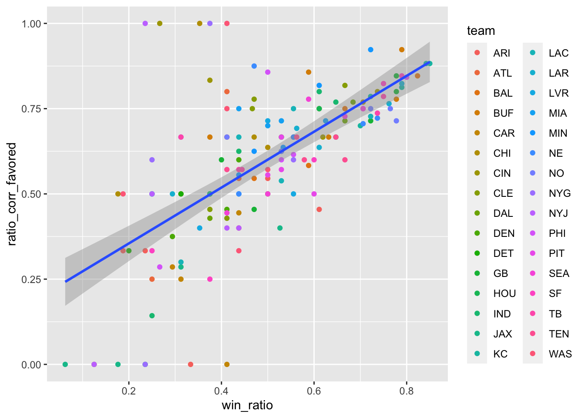
Warning: Removed 4 rows containing non-finite values (`stat_smooth()`).
Removed 4 rows containing missing values (`geom_point()`).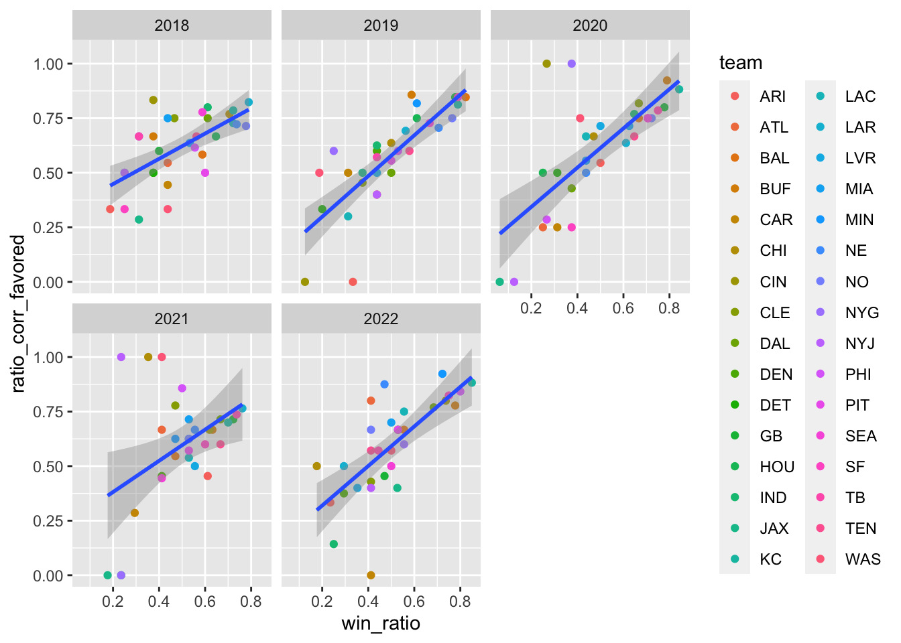
Warning: Removed 4 rows containing non-finite values (`stat_smooth()`).
Removed 4 rows containing missing values (`geom_point()`).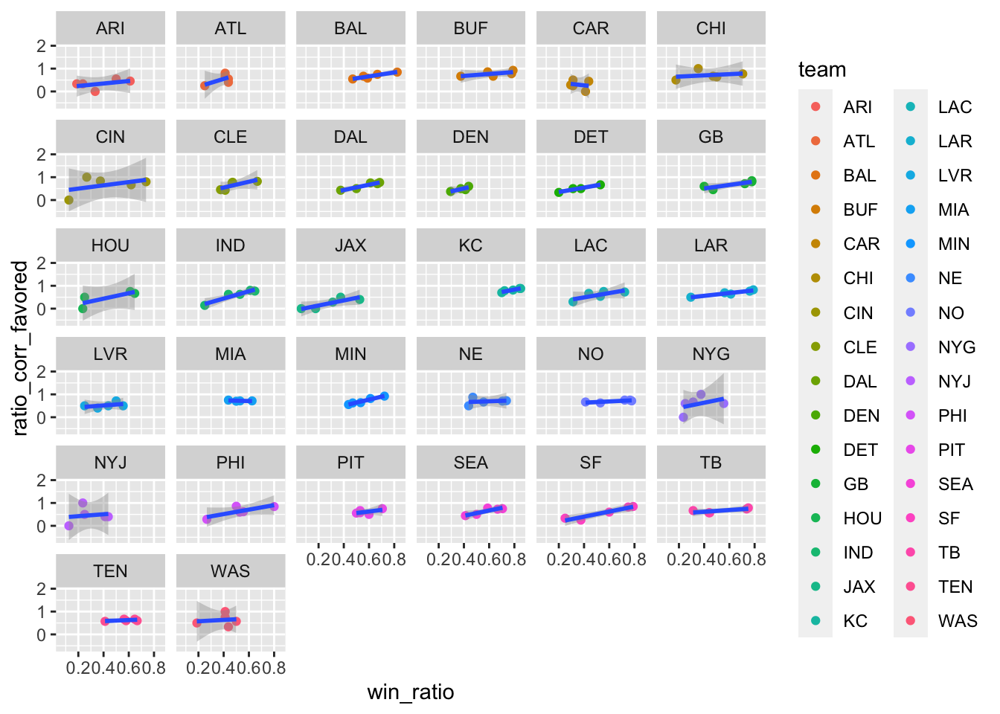
Warning: Removed 4 rows containing non-finite values (`stat_smooth()`).
Removed 4 rows containing missing values (`geom_point()`).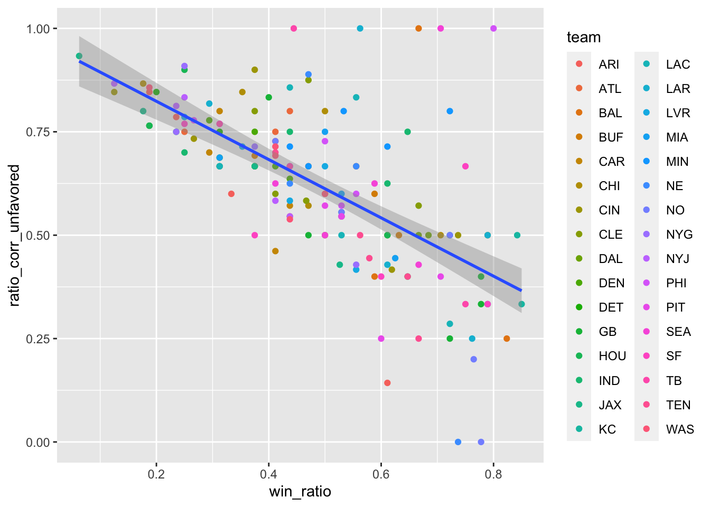
Warning: Removed 4 rows containing non-finite values (`stat_smooth()`).
Removed 4 rows containing missing values (`geom_point()`).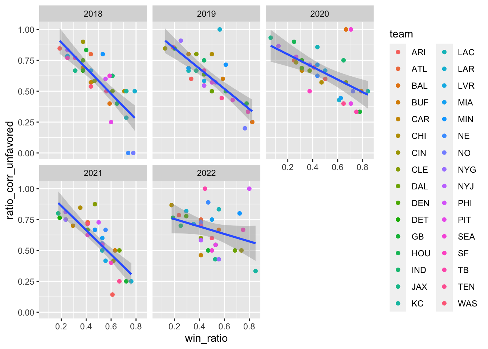
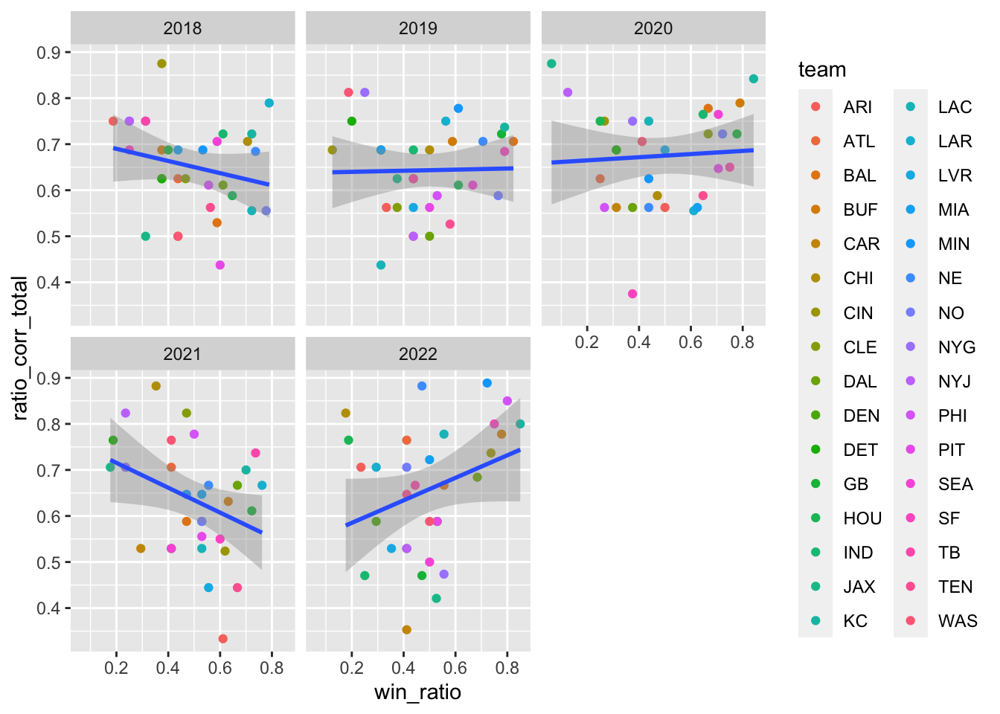
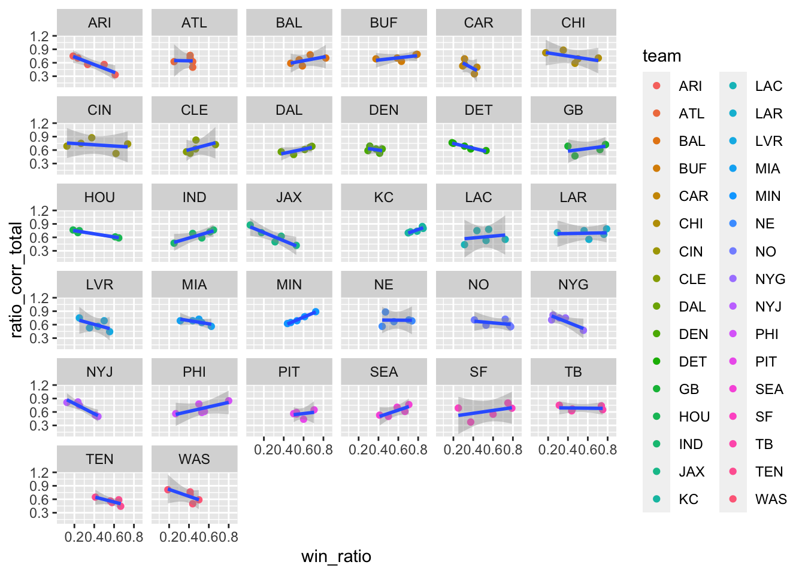
After looking through the regression models and diagnostics, the best performing model I found is (teams\(ratio_corr_favored ~ teams\)win_ratio). It makes sense that this model is well-performing because if you are a team with a high win_ratio across multiple years, you will inherently be favored more often and correctly favored more often. Looking at the regression lines by team is helpful for determining which teams are performing the best in the league, but ultimately that regression is not helpful as a general regression tool as it ultimately just shows the team with the highest win_ratio.
---
title: "FinalPart2"
author: "Liam Tucksmith"
desription: "FinalPart2"
date: "05/02/2023"
format:
html:
toc: true
code-fold: true
code-copy: true
code-tools: true
categories:
- finalpart2
- Liam Tucksmith
- tidyverse
- readxl
- ggplot2
- dplyr
- tidyr
- janitor
---
```{r, echo=T}
#| label: setup
#| warning: false
library(tidyverse)
library(readxl)
library(ggplot2)
library(dplyr)
library(tidyr)
library(janitor)
knitr::opts_chunk$set(echo = TRUE)
```
Note: I slightly changed my final project to be looking at sports betting rather than media. The media portion was too ambitious so I pivoted to something more straightforward. Please let me know if that is an issue.
The most profitable sports league in the world, the National Football League, generated $18 billion in revenue in 2021 according to sportico.com. This total represents national media rights, league sponsorships with gambling companies, news outlets, and other companies, and shared revenue and royalties from the league’s various affiliates and subsidiaries, such as NFL Enterprises, NFL Properties, and NFL International. Sports betting, an industry linked to the NFL, generated $7.5 in revenue in 2021. As money is what keeps the NFL afloat and allows teams to competitively pay for top players and coaches, NFL teams benefit from sports betting engagement and vice versa. What I plan to analyze how the win-rate of a team relates to the ratio of correct money line predictions for that team, season by season. My hypothesis is that teams with higher win ratios will have higher correct money-line prediction ratios, both when they are favored, not favored, and in total.
The first dataset is a collection of all the matchups and scores that occurred in the NFL since 1966. The matchup information includes the names of the two teams competing, home/away team status, the match site, the weather on game day, and the final score for each team. Sports betting data for each game since 1977 is also included, and includes who was favored (money line), the point spread (point differential), and the over/under line. The dataset is from https://www.kaggle.com/datasets/tobycrabtree/nfl-scores-and-betting-data and was created from a variety of sources including games and scores from public websites such as ESPN, NFL.com, and Pro Football Reference. Weather information is from NOAA data, cross-referenced with NFLweather.com. Betting data reflects lines available at sportsline.com and aussportsbetting.com. For the analysis, I will limit the data to the data collected from the previous 5 years.
Data import and clean-up
```{r}
#read in data
scores <- read.csv("~/Documents/GitHub/603_Spring_2023/posts/_data/spreadspoke_scores.csv")
colnames(scores)
scores <- scores[scores$schedule_season >= 2018, ]
summary(scores)
glimpse(scores)
```
Data cleanup and descriptive analytics
```{r}
#map team names to abbreviations
unique(scores$team_home)
unique(scores$team_favorite_id)
#rewrite team_home and team_away to use IDs
scores$team_home[scores$team_home=="Philadelphia Eagles"] <- "PHI"
scores$team_home[scores$team_home=="Arizona Cardinals"] <- "ARI"
scores$team_home[scores$team_home=="Baltimore Ravens"] <- "BAL"
scores$team_home[scores$team_home=="Carolina Panthers"] <- "CAR"
scores$team_home[scores$team_home=="Cleveland Browns"] <- "CLE"
scores$team_home[scores$team_home=="Denver Broncos"] <- "DEN"
scores$team_home[scores$team_home=="Green Bay Packers"] <- "GB"
scores$team_home[scores$team_home=="Indianapolis Colts"] <- "IND"
scores$team_home[scores$team_home=="Los Angeles Chargers"] <- "LAC"
scores$team_home[scores$team_home=="Miami Dolphins"] <- "MIA"
scores$team_home[scores$team_home=="Minnesota Vikings"] <- "MIN"
scores$team_home[scores$team_home=="New England Patriots"] <- "NE"
scores$team_home[scores$team_home=="New Orleans Saints"] <- "NO"
scores$team_home[scores$team_home=="New York Giants"] <- "NYG"
scores$team_home[scores$team_home=="Detroit Lions"] <- "DET"
scores$team_home[scores$team_home=="Oakland Raiders" |
scores$team_home=="Las Vegas Raiders"] <- "LVR"
scores$team_home[scores$team_home=="Cincinnati Bengals"] <- "CIN"
scores$team_home[scores$team_home=="Atlanta Falcons"] <- "ATL"
scores$team_home[scores$team_home=="Buffalo Bills"] <- "BUF"
scores$team_home[scores$team_home=="Dallas Cowboys"] <- "DAL"
scores$team_home[scores$team_home=="Jacksonville Jaguars"] <- "JAX"
scores$team_home[scores$team_home=="Los Angeles Rams"] <- "LAR"
scores$team_home[scores$team_home=="New York Jets"] <- "NYJ"
scores$team_home[scores$team_home=="Pittsburgh Steelers"] <- "PIT"
scores$team_home[scores$team_home=="San Francisco 49ers"] <- "SF"
scores$team_home[scores$team_home=="Tampa Bay Buccaneers"] <- "TB"
scores$team_home[scores$team_home=="Tennessee Titans"] <- "TEN"
scores$team_home[scores$team_home=="Washington Redskins" |
scores$team_home=="Washington Football Team"|
scores$team_home=="Washington Commanders"] <- "WAS"
scores$team_home[scores$team_home=="Chicago Bears"] <- "CHI"
scores$team_home[scores$team_home=="Houston Texans"] <- "HOU"
scores$team_home[scores$team_home=="Kansas City Chiefs"] <- "KC"
scores$team_home[scores$team_home=="Seattle Seahawks"] <- "SEA"
scores$team_away[scores$team_away=="Philadelphia Eagles"] <- "PHI"
scores$team_away[scores$team_away=="Arizona Cardinals"] <- "ARI"
scores$team_away[scores$team_away=="Baltimore Ravens"] <- "BAL"
scores$team_away[scores$team_away=="Carolina Panthers"] <- "CAR"
scores$team_away[scores$team_away=="Cleveland Browns"] <- "CLE"
scores$team_away[scores$team_away=="Denver Broncos"] <- "DEN"
scores$team_away[scores$team_away=="Green Bay Packers"] <- "GB"
scores$team_away[scores$team_away=="Indianapolis Colts"] <- "IND"
scores$team_away[scores$team_away=="Los Angeles Chargers"] <- "LAC"
scores$team_away[scores$team_away=="Miami Dolphins"] <- "MIA"
scores$team_away[scores$team_away=="Minnesota Vikings"] <- "MIN"
scores$team_away[scores$team_away=="New England Patriots"] <- "NE"
scores$team_away[scores$team_away=="New Orleans Saints"] <- "NO"
scores$team_away[scores$team_away=="New York Giants"] <- "NYG"
scores$team_away[scores$team_away=="Detroit Lions"] <- "DET"
scores$team_away[scores$team_away=="Oakland Raiders" |
scores$team_away=="Las Vegas Raiders"] <- "LVR"
scores$team_away[scores$team_away=="Cincinnati Bengals"] <- "CIN"
scores$team_away[scores$team_away=="Atlanta Falcons"] <- "ATL"
scores$team_away[scores$team_away=="Buffalo Bills"] <- "BUF"
scores$team_away[scores$team_away=="Dallas Cowboys"] <- "DAL"
scores$team_away[scores$team_away=="Jacksonville Jaguars"] <- "JAX"
scores$team_away[scores$team_away=="Los Angeles Rams"] <- "LAR"
scores$team_away[scores$team_away=="New York Jets"] <- "NYJ"
scores$team_away[scores$team_away=="Pittsburgh Steelers"] <- "PIT"
scores$team_away[scores$team_away=="San Francisco 49ers"] <- "SF"
scores$team_away[scores$team_away=="Tampa Bay Buccaneers"] <- "TB"
scores$team_away[scores$team_away=="Tennessee Titans"] <- "TEN"
scores$team_away[scores$team_away=="Washington Redskins" |
scores$team_away=="Washington Football Team"|
scores$team_away=="Washington Commanders"] <- "WAS"
scores$team_away[scores$team_away=="Chicago Bears"] <- "CHI"
scores$team_away[scores$team_away=="Houston Texans"] <- "HOU"
scores$team_away[scores$team_away=="Kansas City Chiefs"] <- "KC"
scores$team_away[scores$team_away=="Seattle Seahawks"] <- "SEA"
unique(scores$team_home)
n_distinct(scores$team_home)
unique(scores$team_away)
```
```{r}
#add column for game winner
scores$score_home = as.integer(scores$score_home)
scores$score_away = as.integer(scores$score_away)
scores$winner = ifelse(scores$score_home == scores$score_away, "TIE", ifelse(scores$score_home > scores$score_away, scores$team_home, scores$team_away))
#add column for if money line prediction is true
scores$mlTF = ifelse(scores$winner == scores$team_favorite_id, TRUE, FALSE)
scores$mlHomeAway = ifelse(scores$team_home == scores$team_favorite_id, "Home", "Away")
#get counts for wins and losses, correct and incorrect moneyline predictions when favored and not favored, for away and home games
home_team <- scores %>% group_by(team_home, schedule_season) %>%
summarise(home_wins = sum(team_home == winner),
home_losses = sum(team_away == winner),
ml_incorr_favored_h = sum(mlTF == FALSE & mlHomeAway == "Home"),
ml_incorr_unfavored_h = sum(mlTF == FALSE & mlHomeAway == "Away"),
ml_corr_favored_h = sum(mlTF == TRUE & mlHomeAway == "Home"),
ml_corr_unfavored_h = sum(mlTF == TRUE & mlHomeAway == "Away"),
.groups = 'drop')
away_team <- scores %>% group_by(team_away, schedule_season) %>%
summarise(away_wins = sum(team_away == winner),
away_losses = sum(team_home == winner),
ml_incorr_favored_a = sum(mlTF == FALSE & mlHomeAway == "Away"),
ml_incorr_unfavored_a = sum(mlTF == FALSE & mlHomeAway == "Home"),
ml_corr_favored_a = sum(mlTF == TRUE & mlHomeAway == "Away"),
ml_corr_unfavored_a = sum(mlTF == TRUE & mlHomeAway == "Home"),
.groups = 'drop')
#merge home and away data
teams <- merge(home_team, away_team,
by.x = c("team_home","schedule_season"),
by.y = c("team_away","schedule_season"))
colnames(teams)
teams <- teams %>%
rename("team" = "team_home")
#combine home and away fields
teams$total_wins <- teams$home_wins + teams$away_wins
teams$total_losses <- teams$home_losses + teams$away_losses
teams$total_home_games <- teams$home_wins + teams$home_losses
#combine favored and unfavored, correct and incorrect data
teams$ml_corr_favored <- teams$ml_corr_favored_h + teams$ml_corr_favored_a
teams$ml_corr_unfavored <- teams$ml_corr_unfavored_h + teams$ml_corr_unfavored_a
teams$ml_corr_total <- teams$ml_corr_favored + teams$ml_corr_unfavored
teams$ml_incorr_favored <- teams$ml_incorr_favored_h + teams$ml_incorr_favored_a
teams$ml_incorr_unfavored <- teams$ml_incorr_unfavored_h + teams$ml_incorr_unfavored_a
teams$ml_incorr_total <- teams$ml_incorr_favored + teams$ml_incorr_unfavored
#calculate win, correct, uncorrect, and total money line predictions
teams$win_ratio = teams$total_wins/(teams$total_wins + teams$total_losses)
teams$ratio_corr_favored = teams$ml_corr_favored/(teams$ml_corr_favored + teams$ml_incorr_favored)
teams$ratio_corr_unfavored = teams$ml_corr_unfavored/(teams$ml_corr_unfavored + teams$ml_incorr_unfavored)
teams$ratio_corr_total = teams$ml_corr_total/(teams$ml_corr_total + teams$ml_incorr_total)
```
```{r}
head(teams, 50)
```
```{r}
#plot correct and incorrect moneyline prediction ratio for each team by season
agg_tbl <- teams %>% group_by(team, schedule_season) %>%
summarise(corr_ratio = (sum(ml_corr_total)/(sum(ml_corr_total + ml_incorr_total))),
incorr_ratio = (sum(ml_incorr_total)/(sum(ml_corr_total + ml_incorr_total))),
sum = sum(ml_corr_total + ml_incorr_total),
.groups = 'drop')
ggplot(agg_tbl, aes(factor(team), fill=factor(corr_ratio))) +
geom_bar()
ggplot(agg_tbl, aes(x=schedule_season, y=corr_ratio)) +
geom_col() +
facet_wrap(~team)
#plot correct moneyline prediction ratio for each team by season, facet by team
agg_tbl2 <- teams %>% group_by(team, schedule_season) %>%
summarise(ratio = (sum(ml_corr_favored)/(sum(ml_corr_favored + ml_incorr_favored))),
.groups = 'drop')
ggplot(agg_tbl2, aes(x=schedule_season, y=ratio)) +
geom_col() +
facet_wrap(~team)
```
```{r}
#plot win ratio of each team by season
agg_tbl3 <- teams %>% group_by(team, schedule_season) %>%
summarise(ratio = total_wins/(total_wins + total_losses),
.groups = 'drop')
ggplot(agg_tbl3, aes(x=schedule_season, y=ratio)) +
geom_point(aes(colour = factor(team)))
```
```{r}
regFavored <- lm(teams$ratio_corr_favored ~ teams$win_ratio)
print(summary(regFavored))
regUnfavored <- lm(teams$ratio_corr_unfavored ~ teams$win_ratio)
print(summary(regUnfavored))
regTotal <- lm(teams$ratio_corr_total ~ teams$win_ratio)
print(summary(regTotal))
```
```{r}
regFavoredTeam <- lm(teams$ratio_corr_favored ~ teams$win_ratio + teams$team)
print(summary(regFavoredTeam))
regUnfavoredTeam <- lm(teams$ratio_corr_unfavored ~ teams$win_ratio + teams$team)
print(summary(regUnfavoredTeam))
regTotalTeam <- lm(teams$ratio_corr_total ~ teams$win_ratio + teams$team)
print(summary(regTotalTeam))
```
```{r}
regCorrFavplot <- ggplot(teams, aes(x=win_ratio, y=ratio_corr_favored)) +
geom_point(aes(colour = team)) +
stat_smooth(method = "lm",
formula = y ~ x,
geom = "smooth")
regCorrFavplot2 <- ggplot(teams, aes(x=win_ratio, y=ratio_corr_favored)) +
geom_point(aes(colour = team)) +
stat_smooth(method = "lm",
formula = y ~ x,
geom = "smooth") + facet_wrap(~schedule_season)
regCorrFavplot3 <- ggplot(teams, aes(x=win_ratio, y=ratio_corr_favored)) +
geom_point(aes(colour = team)) +
stat_smooth(method = "lm",
formula = y ~ x,
geom = "smooth") + facet_wrap(~team)
regCorrUnplot <- ggplot(teams, aes(x=win_ratio, y=ratio_corr_unfavored)) +
geom_point(aes(colour = team)) +
stat_smooth(method = "lm",
formula = y ~ x,
geom = "smooth")
regCorrUnplot2 <- ggplot(teams, aes(x=win_ratio, y=ratio_corr_unfavored)) +
geom_point(aes(colour = team)) +
stat_smooth(method = "lm",
formula = y ~ x,
geom = "smooth") + facet_wrap(~schedule_season)
regTotalplot <- ggplot(teams, aes(x=win_ratio, y=ratio_corr_total)) +
geom_point(aes(colour = team)) +
stat_smooth(method = "lm",
formula = y ~ x,
geom = "smooth") + facet_wrap(~schedule_season)
regTotalplot2 <- ggplot(teams, aes(x=win_ratio, y=ratio_corr_total)) +
geom_point(aes(colour = team)) +
stat_smooth(method = "lm",
formula = y ~ x,
geom = "smooth") + facet_wrap(~team)
regCorrFavplot
regCorrFavplot2
regCorrFavplot3
regCorrUnplot
regCorrUnplot2
regTotalplot
regTotalplot2
```
After looking through the regression models and diagnostics, the best performing model I found is (teams$ratio_corr_favored ~ teams$win_ratio). It makes sense that this model is well-performing because if you are a team with a high win_ratio across multiple years, you will inherently be favored more often and correctly favored more often. Looking at the regression lines by team is helpful for determining which teams are performing the best in the league, but ultimately that regression is not helpful as a general regression tool as it ultimately just shows the team with the highest win_ratio.
```{r}
plot(regFavoredTeam)
```